指令：Language of the Machine¶
介绍¶
指令有指令集 我们这里讲的是RISC-V指令集 全称是Reduced Instruction Set Computer
设计目标是提高表现 降低消费 减少设计时间
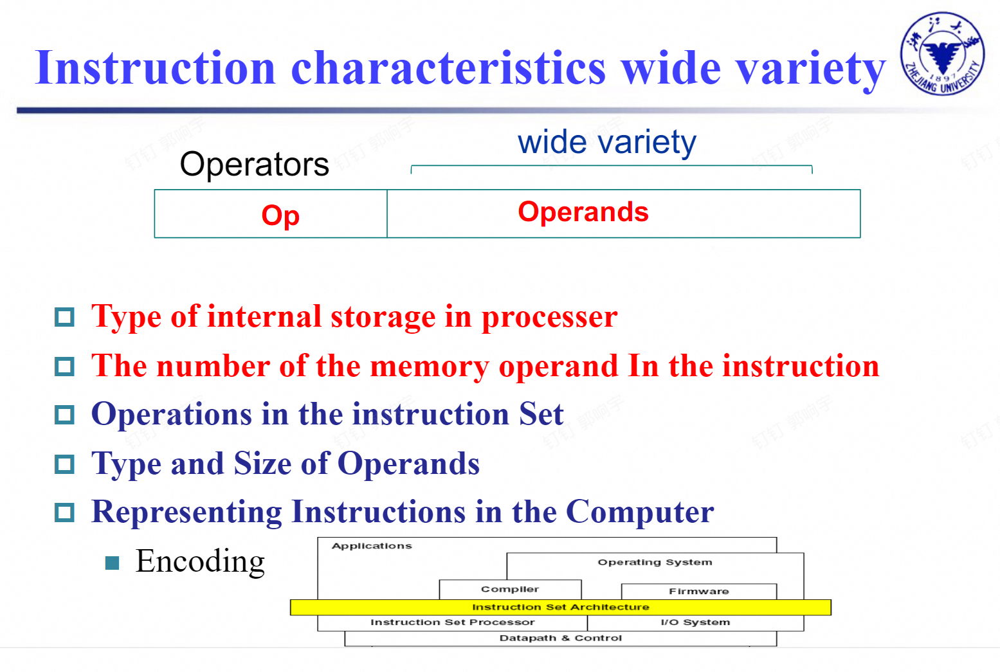
指令都是由操作符（add）还有操作数（a b c）组成
影响指令特性的关键因素有以上五条
计算机硬件的操作¶
stored program concept¶
所有的东西存下来都是以数字形式的（01）
原则¶
1.一个指令只能有一个操作（只能加 或者 只能减） 2.只能有三个变量（操作数）
design principle1 simplicity favors regularity
计算机硬件的操作数¶
运算命令符都用寄存器¶
运算指令是用寄存器作为（存储）操作数
RISV-C用32个*64位的寄存器(64位叫做doubleword)
寄存器是用来存频繁访问的数据
注意了 register是寄存器 memory是内存 二者概念不同 内存是用地址对应数据 一个地址对应8位。
命令也会有地址（命令是32位，所以一个命令占四个地址） 寄存器也可以存地址
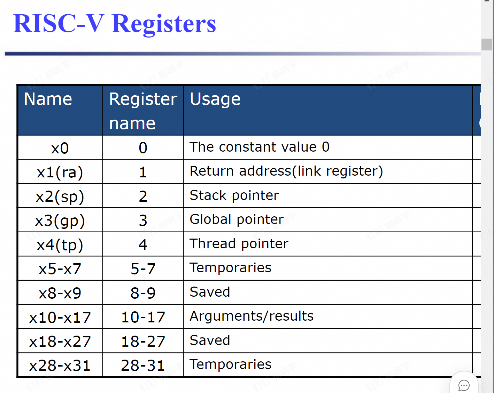
这是32个寄存器
有个基本的例子见ppt
大概就是 add x1 x2 x3的意思是把 x2 x3 加起来写到 x1中
内存命令符¶
1. 内存用于存储复合数据¶
主内存（Main Memory）适合存放“复合数据”，比如：
- 数组（Arrays）：多个相同类型元素的集合（如
int arr[100]）； - 结构体（Structures）：多种类型元素的组合（如包含
int、float的自定义结构）； - 动态数据（Dynamic data）：堆上分配的、运行时才确定大小的数据（如C++的
new、Python的列表）。 → 原因：寄存器容量小（仅几十个），而内存容量大，能承载体积更大、更复杂的数据结构。
2. 算术运算与内存的交互¶
CPU的算术运算（如加减乘除） 主要在寄存器中进行（寄存器速度远快于内存）。因此，数据需要在“内存”和“寄存器”间搬运：
- 先通过 Load指令：把内存中的数据加载到寄存器；
- 运算完成后，通过 Store指令：把寄存器中的结果写回内存。
3. 内存的寻址方式：按字节寻址（Byte Addressed）¶
内存的每个地址唯一对应一个 8位的字节（Byte）。也就是说，内存的“寻址粒度”是1字节——地址空间里的每个“单元”都是1字节，这是内存访问的基本规则。
4. 字节序：小端序（Little Endian）¶
RISC-V采用小端序存储多字节数据（如“字（Word，通常4/8字节）”）。“小端序”的规则是：
- 一个多字节数据中，最低有效字节（LSB，Least-Significant Byte） 存放在该数据的最低地址处。
- 对比“大端序（Big Endian）”：大端序中，最高有效字节（MSB，Most-Significant Byte） 存放在最低地址处。
→ 举例：存储数值 0x12345678（4字节）：
- 小端序：地址从低到高，依次存
78、56、34、12； - 大端序：地址从低到高，依次存
12、34、56、78。
5. 内存对齐要求：无强制对齐¶
RISC-V不要求“字（Word）”在内存中必须“对齐”存储（“对齐”指：数据的起始地址是其长度的整数倍。比如4字节的字，对齐的地址是0x...0、0x...4等4的倍数）。
→ 对比：有些其他指令集架构（如早期ARM、MIPS）会强制内存对齐，否则触发错误或性能损失。RISC-V的设计更灵活，但非对齐访问可能需要额外硬件逻辑处理。
例子¶
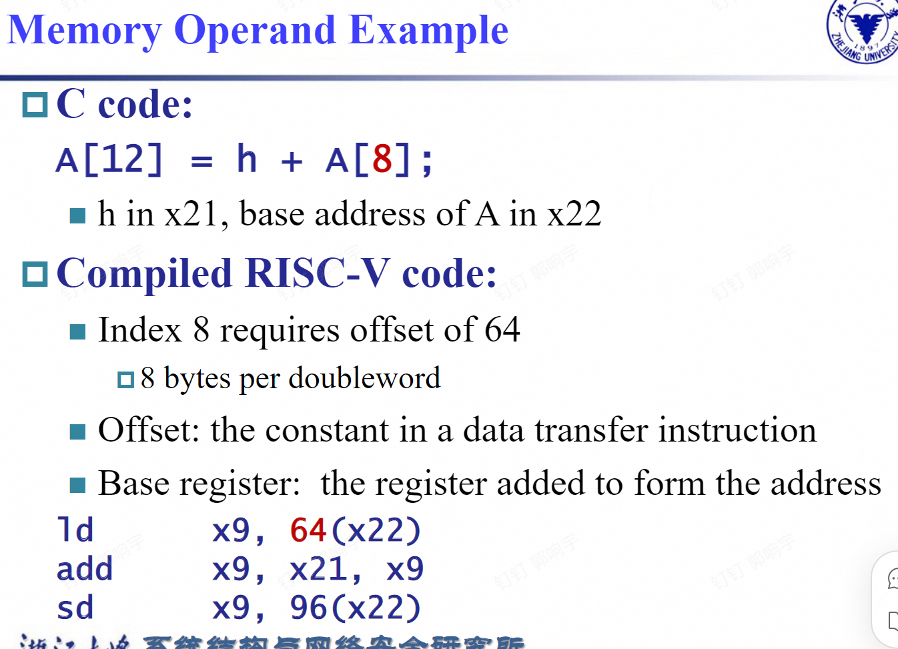
ld是load指令 是把一个地址的东西读到寄存器中
64（x22）是说从x22存的地址+64开始读，因为每个doublewordrd占8个字节（8个地址） 88=64
sd 就是把寄存器的东西写回地址（memory）中
constant and immediate oprands 常量或立即数操作数¶
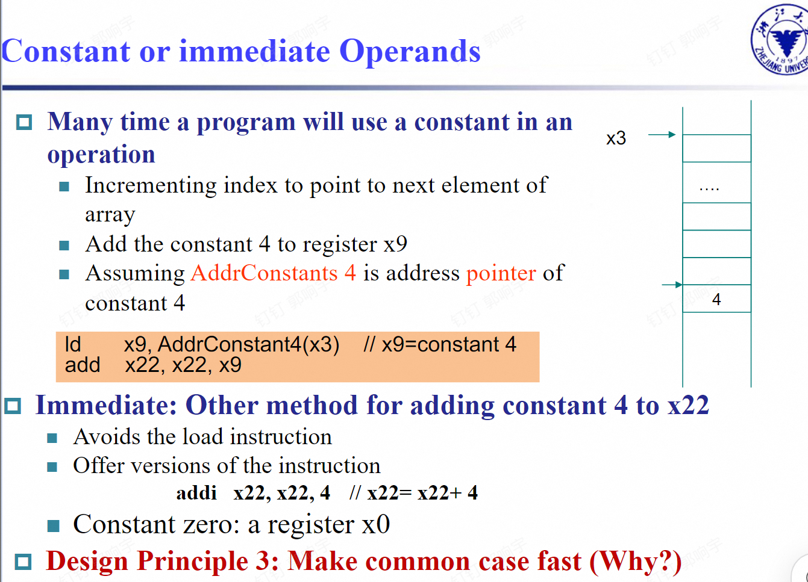
就是加常数也有自己的命令addi
总结¶
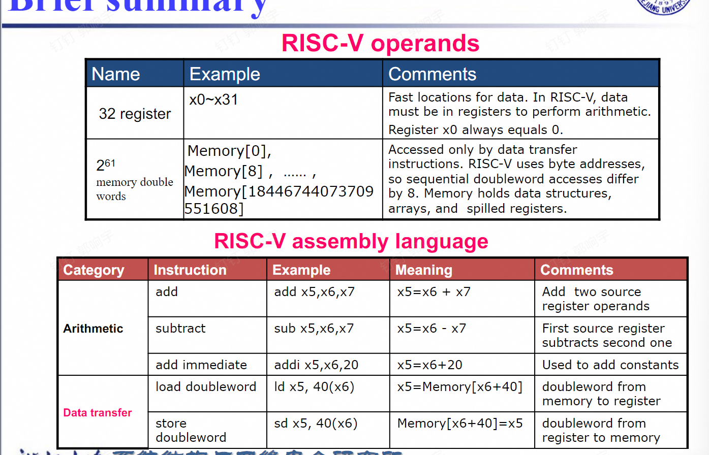
有符号和无符号数¶
无符号数¶
看ppt
有符号数的补码（都存补码）¶
补码下有符号数取反¶
1.所有位按位取反 2.加1 3.得到的还是补码！
计算机中指令的表示¶
简介¶
- 信息的二进制本质：计算机中所有信息（包括指令、数据）都由二进制位（bits）组成。
- 指令的二进制编码：指令会被编码为二进制形式，称为机器码（machine code），是CPU能直接识别执行的格式。
- 寄存器的数字映射：RISC-V的32个通用寄存器（
x0~x31）被映射为数字0~31，便于指令编码时表示寄存器编号。 - RISC-V指令的编码特性：
- 每条指令被编码为32位的指令字（固定长度，简化硬件解码）。
- 采用少量统一的格式，编码“操作码（opcode，指定指令类型）”“寄存器编号”等关键信息。
- 设计具有规整性（Regularity），让硬件解码更高效，也便于编译器生成/优化代码。
例子见ppt¶
指令格式¶
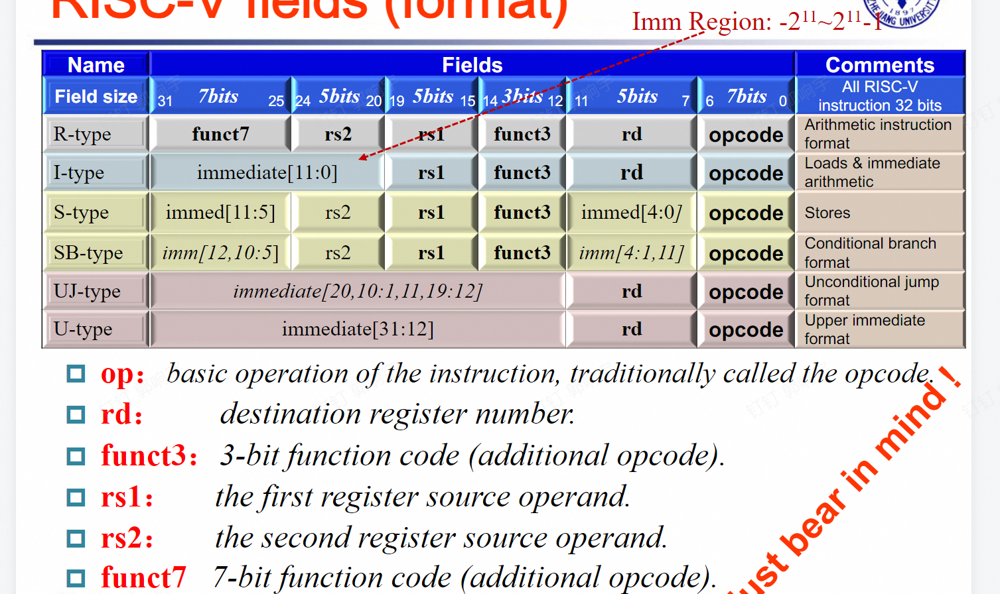
大概就是这个格式
先看几个重点
op 操作符 7位
rd 目标寄存器 5位
rs1 操作数1（寄存器编号） 5位（提供数值的）
rs2 操作数2（寄存器编号） 5位（提供数值的）
还有一些在不同指令下不同
R类指令¶
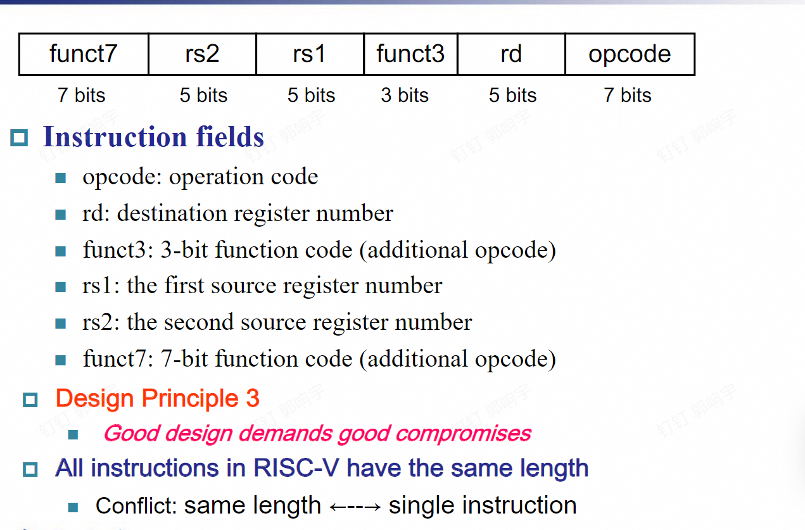
I类指令¶
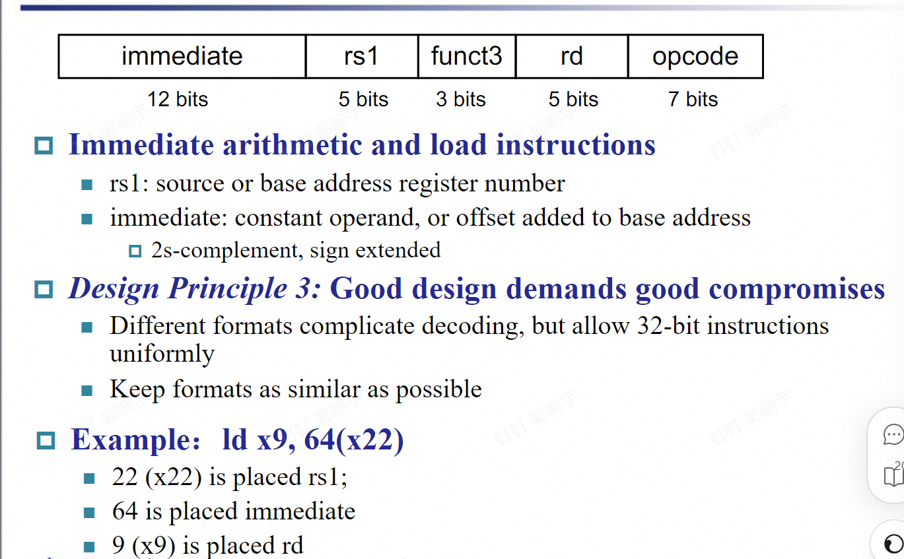
1231 这里的immediate是立即数 就是可以理解成一个常数或者要加在地址上的数
S类指令¶
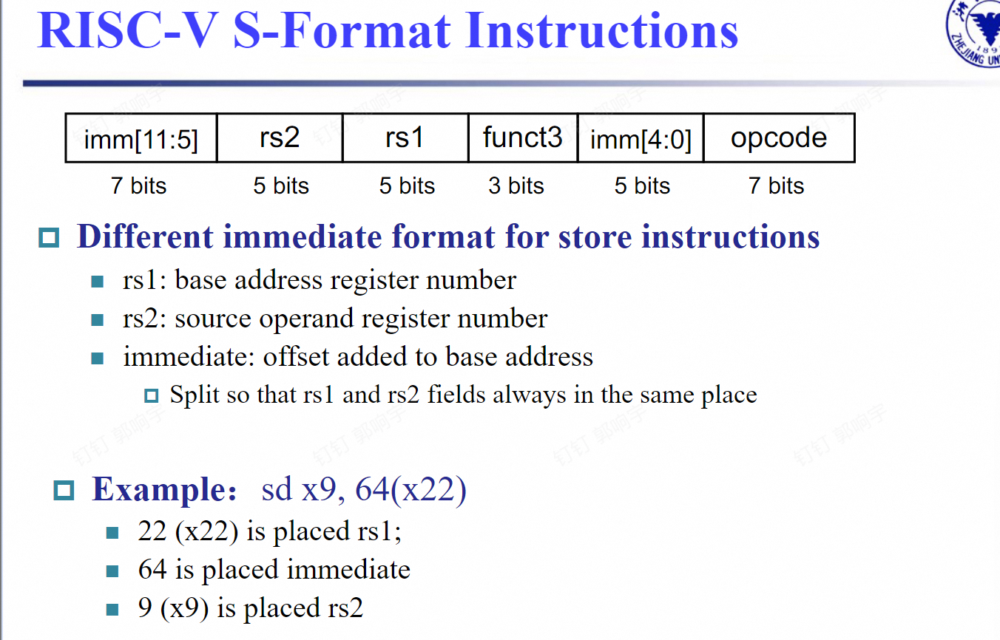
只有rd ld是能让寄存器和内存交互的
注意是写二进制还是16进制！
存储¶
1.命令 data（包括程序原代码）都是用二进制数据存储的
2.Instrcutions 和 data都是存在内存中
logical operation¶
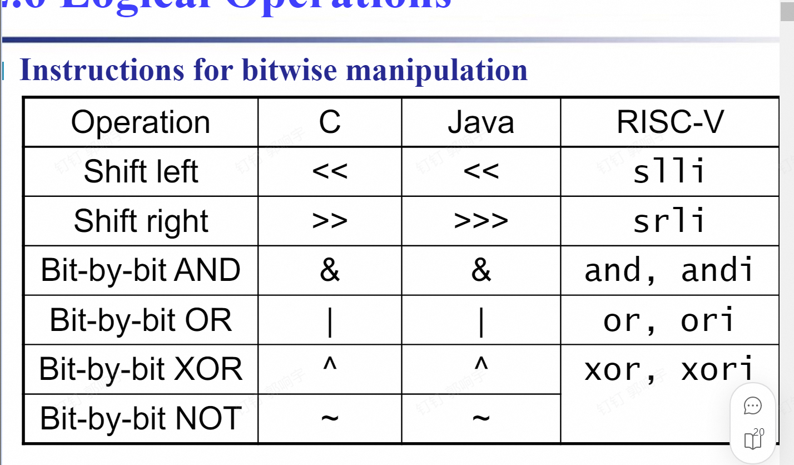
就是什么按位与 左移 右移
shift operation¶
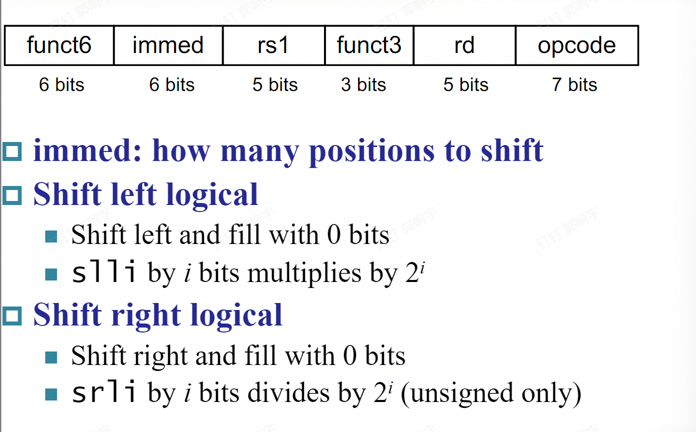
注意这里immed是表示移动多少位（只有6位）
and operation¶
and x9 x10 x11
or
xor 都差不多
总结1¶
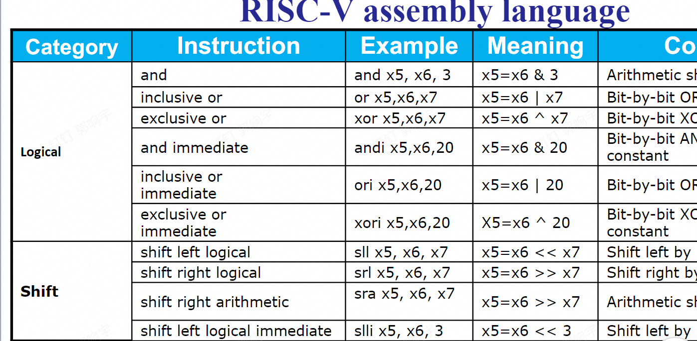
注意这里算数右移 是最高位补符号位的
make decision 的指令¶
beq r1 r2 L1 如果r1==r2跳转到L1 bne r1 r2 L1 如果r1!=r2跳转到L1
但是
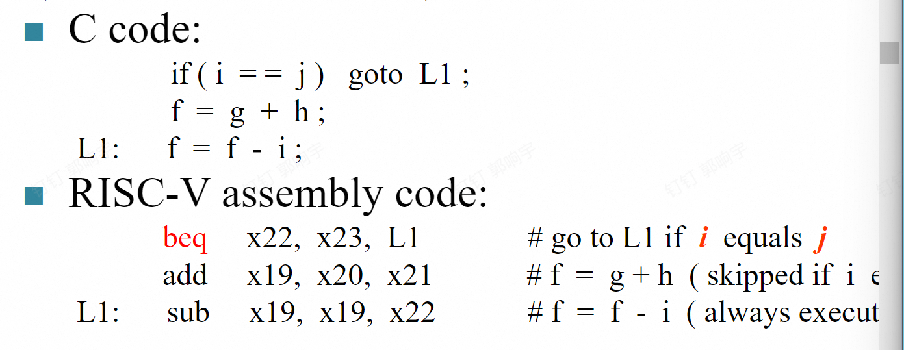
如果写成这样 会是无论如何都会执行L1 因为是顺序执行的
改进¶
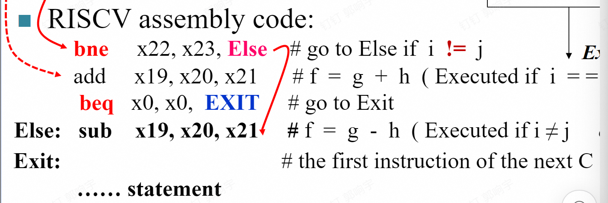
我们加一个bnq x0 x0 Exit 就可以成功跳出了(用不相等做跳出 可以效率提高)
它可以支持循环loops（for）¶
只需要把第一语句叫做 loop
最后一个放bne x1 x2 loop就好了
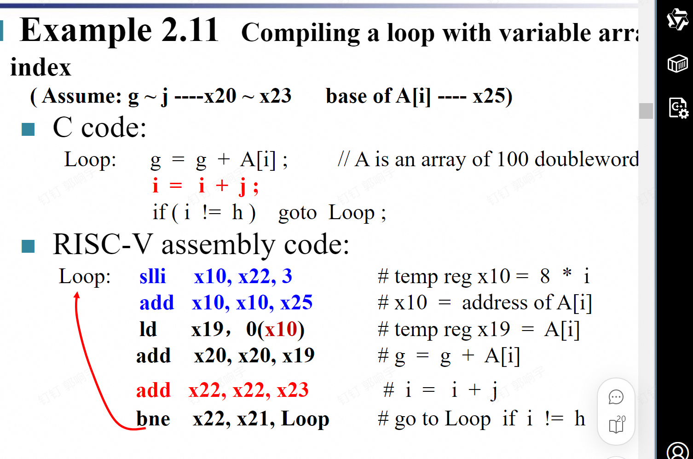
首先 slli x10 x22 x3 相当于x10=8*i 之后x10 变成A[i]的地址 之后写到19 加到20 x22=x22+x23 判断是否相等 否则回到loop
它也可以支持循环while（区别就是先判断再执行（while）还是先执行再判断（for））¶
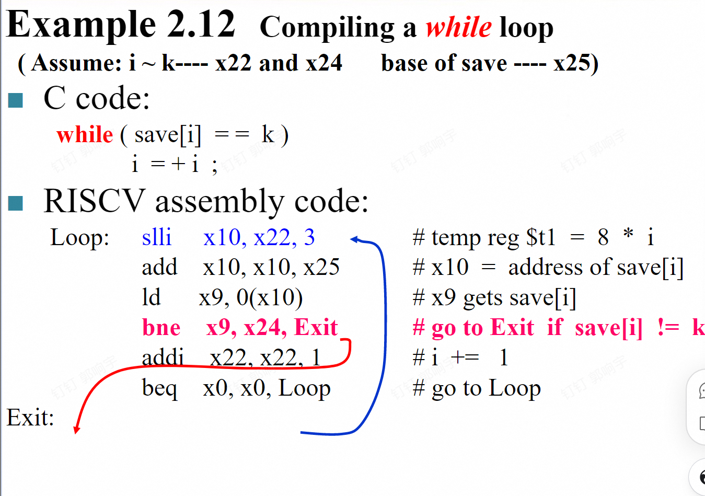
更多指令 set on less than¶
slt x5 x1 x2 就是 x5=x1<x2
blt x1 x2 L1 如果x1<x2跳转到L1
bge x1 x2 L1 如果x1>=x2跳转到L1
unsigned and signed¶
unsigned 就是指令后面加个U
case 的语法¶
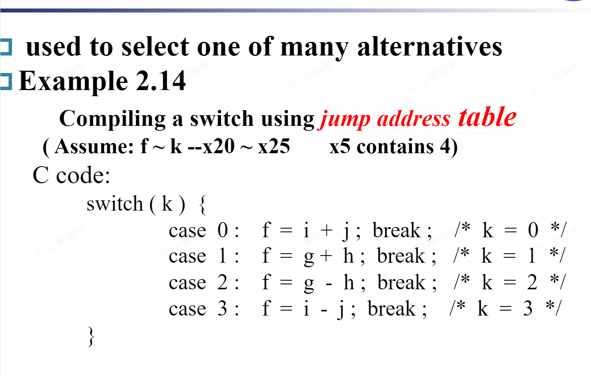
这个怎么写 听我慢慢说
1.基本知识¶
两个语句
1.jal x1 100 就是说x1=pc+4(PC是这一个语句的地址，+4就是下一个) 再跳转到以100（相对的！）为地址的地方（注意，这里存的是一个语句（32位））
2.jalr x1 （100）x2 就是说x1=pc+4 再跳转到以x2+100为地址的地方（存的也是语句）相当于执行语句了
jump address table¶
这四个case语句都会有一个地址
还有一个表 这个表就是存这几个地址的
就相当于一个数组 数组每一位有个地址 每一位存了一个地址（语句的地址）
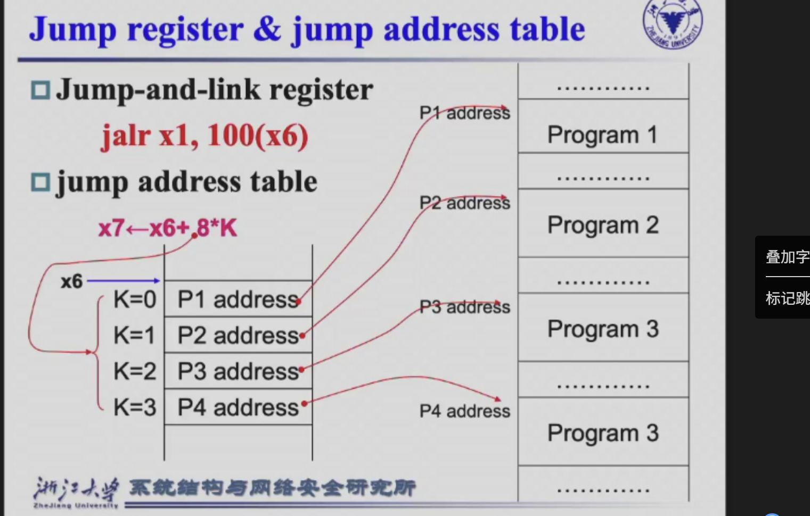
case构建¶
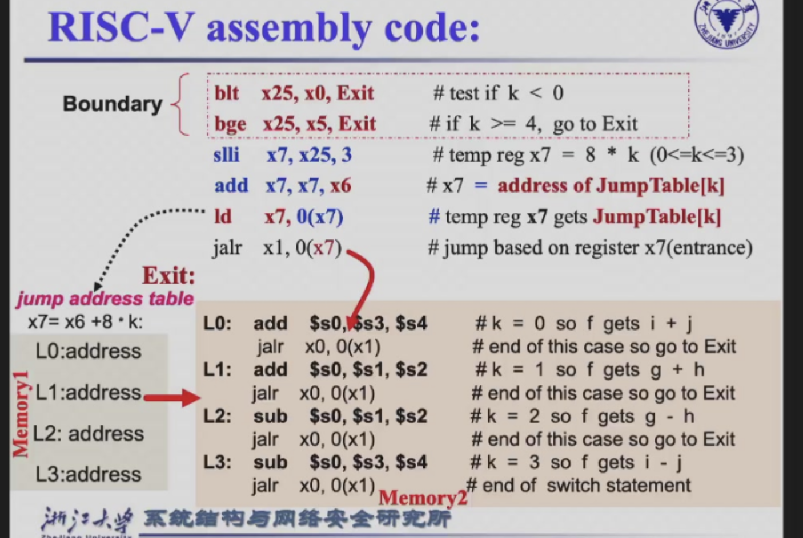
重点几句 slli x7 x25 3 就是x7=8*k 这里的x7是用来存表的偏移地址的（因为一个地址可能是64位的）
add x7 x7 x6 就是把x7变成真正要查的数组元素的地址
ld x7 0(x7) 就是把x7这个地址的元素读到x7中 此时x7是语句地址
jalr x1 0(x7) 就是跳到x7这个地址的语句
后面再跳回x1 就是接着往下执行
基本块¶
- 基本块的定义与特征
基本块是一段指令序列，具有两个关键特征： 「无嵌入式分支（末尾除外）」：在基本块内部不会出现分支指令（如跳转、条件分支等），仅在块的末尾可能存在分支操作。 「无分支目标 / 分支标签（开头除外）」：只有基本块的开头可以作为分支指令的目标位置（即被跳转指令指向），块内部不能有分支标签或成为分支目标。
- 基本块的作用 对于编译器：识别基本块是编译优化的基础。编译器可以基于基本块进行各类优化操作（如常量传播、死代码消除、指令重排等），提升代码执行效率。 对于处理器：先进的处理器可通过指令级并行等技术，加速基本块的执行，从而提升程序运行速度。
Supporting Procedures（函数）¶
就是说函数调用的问题，也就是说一个程序调用另一个
首先我们明白 程序是由一行行命令组成的
函数的定义和步骤¶
函数是什么：就是一段程序，基于传入参数执行任务
步骤
1.参数传递：将参数放置在过程（函数）可访问的位置，例如 MIPS 架构通过函数参数寄存器a0-a7 传递参数。 2.控制转移：通过 “跳转” 操作，将程序控制权转移到过程的入口。 3.获取存储资源：为过程分配所需的存储资源（如栈空间，用于保存局部变量、寄存器值等）。 4.执行任务：运行过程内部逻辑，完成特定功能。 5.结果返回：将结果放置在调用者程序可访问的位置，例如 MIPS 架构通过返回值寄存器a0-a1 传递结果。 6.控制返回：将程序控制权返回给调用点，通过返回地址寄存器ra 定位调用时的原位置。
看第一个 如何控制转移 跳转¶
这里就是上面说的jal jalr
其实就是先jal 跳到函数 x1存的是主程序的下一条命令。
之后再通过jalr跳到x1 就是回到主程序
using more registers（寄存器不够用了--反复用）¶
1.a0-a7 函数参数寄存器(对应x10-x17) 这个是负责传参 需要保存 返回主程序的的寄存器
2；ra/x1 是返回地址寄存器（用来存应该返回到的命令的地址）
栈(解决寄存器不够用的情况)（这是memory的一块空间）¶
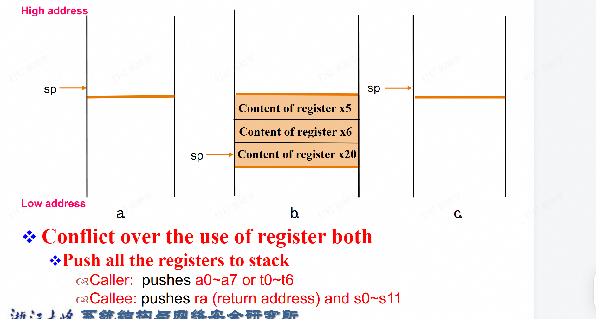
说白了就是把寄存器的值先放到memory，之后再还回去，保证了不该变的不变。哦对！还有最重要的 其实是传参
这里的栈长得和之前学的那个一样 也是先进后出
有一个栈指针寄存器 sp 指的是栈顶位置
栈是从高地址向低地址存储
所以 入栈是sp=sp-8
出栈是sp=sp+8
例子例子¶
ppt有一个返回f=g+h-i-j的例子。 函数的参数是g h i j
注意入栈和弹栈的方式
注意的就是这样的操作保证了中间用到的寄存器x5 x6 x20的值不会被改变 因为别人后面也要用
但是这样很没有效率 因为把x5 x6 只是为了做中间变量，对callar（调用者没有意义）
所以 我们划分了两种寄存器
t0-t6 是临时寄存器 根本不用保存 随便改
s0-s11是保存寄存器 需要保存值（也就是要传到栈里）
超级例子¶
ppt递归
也可以发现 栈的作用是保存一下需要记住 但迫不得已改变的量（比如计算需要，因此saved register也是可以改变的 只不过最后要回复）
而且这里的保留和不保留是针对于被调用者来说的，即被调用者返回时要不要把这个寄存器改回原来的值。
其实就算是a0-a7可能也需要保存，但这个是调用者的责任。
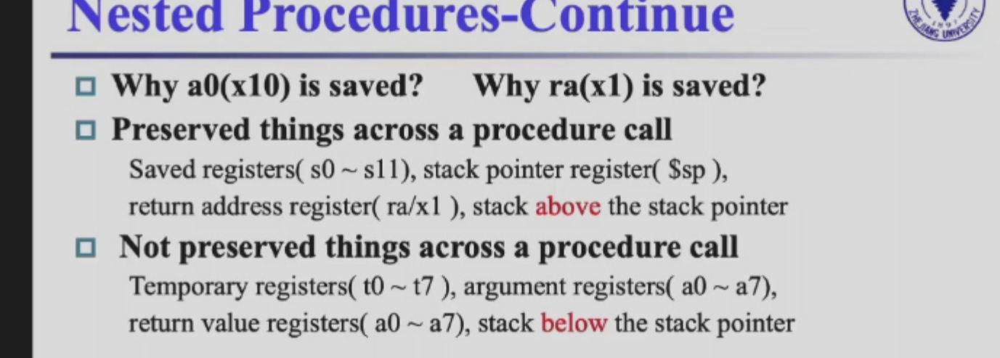
帧指针¶
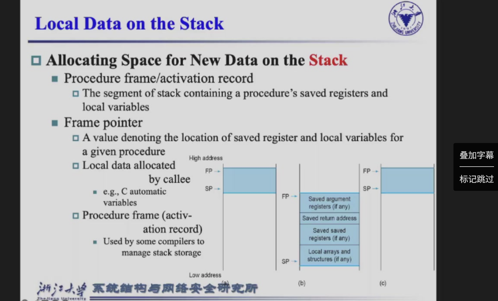
先看一下不同东西存的结构
这里的帧指针的作用是什么？ 因为栈指针一直指的是栈顶 会变动 不方便加偏移量使用
而帧指针是不变的 一直指的是那些saved的东西的第一个（这样方便偏移查询）
1. 核心主题¶
讲解函数调用时，如何在栈里为函数分配空间（存局部变量、保存的寄存器等数据）。
2. 关键概念¶
-
过程帧/活动记录（Procedure frame/activation record） 栈里的一段“专属区域”，用来存某个函数的：
-
被保存的寄存器（比如之前说的s寄存器）；
-
函数的局部变量（这不是寄存器）。 简单说：每个函数调用时，栈都会单独划一块空间存它的临时数据，这就是“过程帧”。
-
帧指针（Frame pointer，简称FP） 一个“标记”（存在寄存器里，比如RISC-V的
s0/fp），用来定位当前函数的过程帧位置——通过FP能快速找到这个函数的局部变量、保存的寄存器存在栈的哪里。 -
被调用方分配的局部数据 比如C语言里的“自动变量”（就是函数内的局部变量，比如
int x;），这些数据是由“被调用的函数”（callee）在栈上分配空间的。
3. 栈帧的结构（右边的图）¶
栈是“高地址在上、低地址在下”（栈向下增长），图里的SP是栈指针（指向栈顶），FP是帧指针（指向当前函数栈帧的起始位置）。
栈帧里通常会存这些内容：
- 保存的参数寄存器；
- 保存的返回地址；
- 保存的s寄存器；
- 局部数组、结构体等数据（因为寄存器放不下）。
内存的布局¶
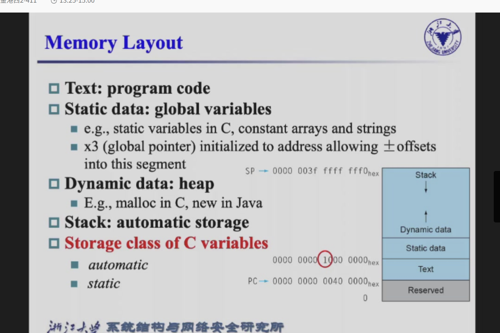
这里写的很明白了。
这页PPT讲的是程序运行时的“内存布局”——也就是程序在内存里被分成了哪几个功能区域，每个区域存什么数据，拆解如下：
1. 内存的4个核心区域¶
程序运行时，内存会被划分为4个独立的“段”，每个段有明确的用途：
- Text段：存程序的代码（指令），比如你写的函数逻辑对应的机器指令，PC（程序计数器）会指向这个段的地址来执行代码。
-
Static data段：存全局变量、静态变量（比如C里的
static int a;、常量数组、字符串常量）。 这里还提到RISC-V的x3（全局指针gp）——它会被初始化为这个段的地址，方便快速访问全局变量。 -
Dynamic data段（堆）：存动态分配的数据（比如C里
malloc申请的内存、Java里new创建的对象），需要手动申请/释放。 - Stack段（栈）：存自动变量（也就是函数的局部变量），随函数调用自动分配/销毁（之前讲的栈帧就在这里）。
2. 内存地址的分布（右边的图）¶
内存地址是“从低到高”排列的：
- 最底部是
Reserved（保留区域）； - 往上是
Text（程序代码，PC指针指向这里）； - 再往上是
Static data（全局/静态变量）； - 然后是
Dynamic data（堆）（堆是向上增长的）； - 最顶部是
Stack（栈）（栈是向下增长的）。 （堆和栈中间的区域，是它们动态扩展的空间）
3. C变量的“存储类”对应关系¶
C里的变量类型，会对应到不同的内存段：
automatic（自动变量）：对应Stack段（函数局部变量）；static（静态变量）：对应Static data段（全局/静态变量）。
两页很重要的ppt¶
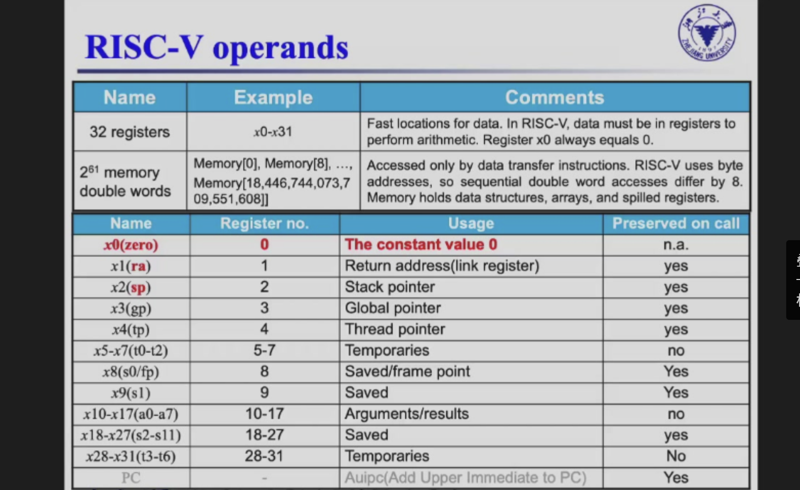
寄存器
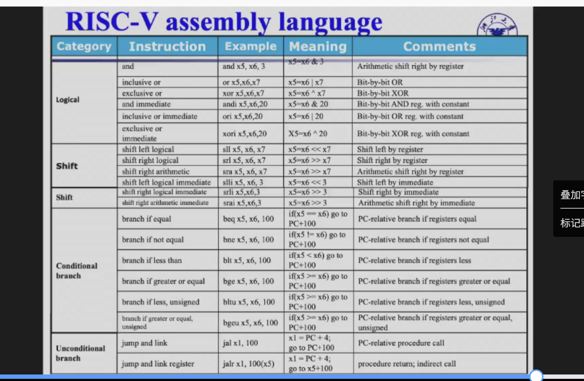
指令
Character Data¶
就是字符编码
1.acsll编码 128个字符 95个图形 33个控制
2.Latin-1编码 256个字符
3.Unicode 32位字符集合 涵盖绝大多数字母表和符号
你看这里有8位 16位 32位 和之前的doubleword 64位不同
因此指令也不会太一样
-
带符号扩展的加载指令 指令：lb（加载字节8）、lh（加载半字16）、lw（加载字32） 功能：从内存中读取 8 位、16 位、32 位数据后，符号扩展到 64 位，存入目标寄存器rd。
-
无符号扩展的加载指令 指令：lbu（加载无符号字节）、lhu（加载无符号半字）、lwu（加载无符号字） 功能：从内存中读取 8 位、16 位、32 位数据后，零扩展到 64 位，存入目标寄存器rd。
-
存储指令 指令：sb（存储字节）、sh（存储半字）、sw（存储字） 功能：将源寄存器rs2中最右侧的 8 位、16 位、32 位数据，存储到由offset（偏移量）和rs1（基地址）计算出的内存地址中。
不过和ld rd语法也都差不多喽
ppt有个例子
这就是一个叶子程序（里面没有分支或者循环）
所以其实这里用s3（saved 寄存器）不太合适 因为还要先压栈记住再弹栈回来 没什么必要
加很大的立即数¶
我们之前指令加的立即数的位数是12位
但如果想加很大的呢？
大立即数指令¶
我们这里用20位立即数
U型指令
lui rd,imm 就是把imm这个数放到rd这个寄存器里
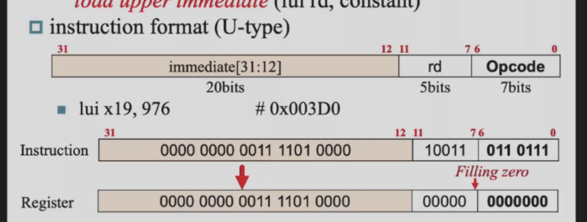
格式 左边20位是立即数 右边七位是opcode 中间是寄存器
注意 实际传到寄存器的值是imm左移12位（这起到了解决大立即数的作用）
但是这样你会说不是这后面12位怎么办？
注意 这里说的lui 976不是加976 而是976*2的12次方
欸 很简单 再来一个addi的指令不就好了
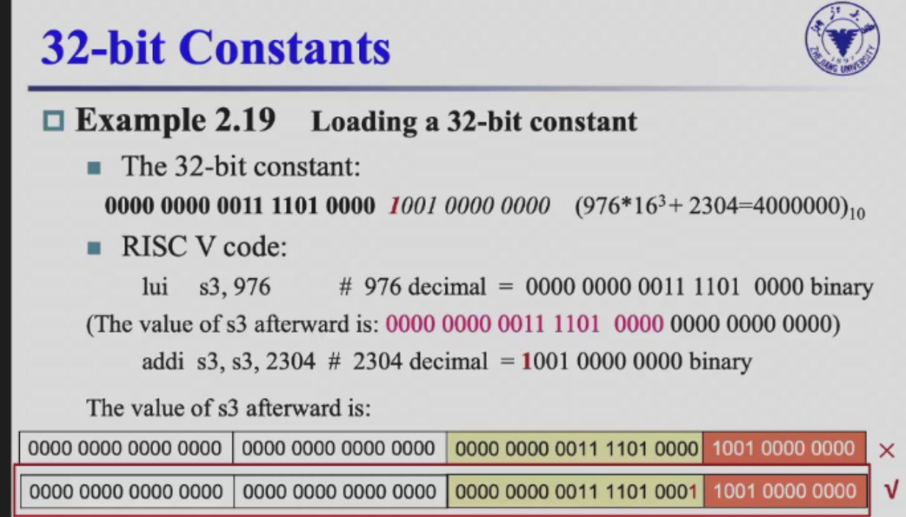
看这个例子 注意是放在64位的右边32位
但这里有个问题！
addi的立即数最高位是符号位！ 这里表达有问题
那怎么办呢？
解决¶
很简单 我们在976那里+1就好了 具体ppt也有（ppt的图是错的！应该是变成lui s3 977以及addi s3 s3 2304）
原理大概就是2304-(111100000000)=2的13次方 这里的意思就是本来该加2304 结果加了一个负数 11110000000就是这个负数补码的源码
当然如果加的数小于2048就没这种麻烦了
地址跳转¶
分支跳转（注意这里是PC偏移量）¶
跳转指令(比如分支跳转) SB-type
例子：bne x10 x11 2000(2000=0111 1101 0000)
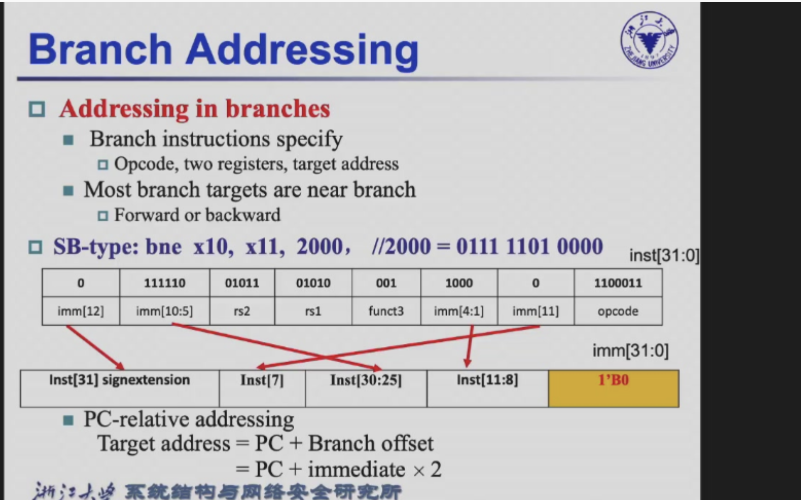
不过你也看到 这里拆的很散 而且再组合成2000也很怪异
还有一个注意的点 指令里面其实存的是1000 因为后面组成的时候会默认最后补0 也就是乘二（但bne那里就是2000 就是要跳到2000！）
也就是偏移字段是1000 实际偏移量是2000
无条件跳转（也注意是PC偏移量）¶
UJ-type
就是我们之前看到的jal 它支持20位的地址输入
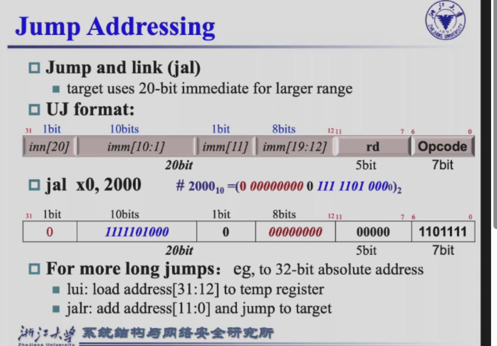
所以大跳转 我们可以先用lui 再用jalr
注意 这个也有上面乘2的问题！
注意 jalr是i型指令！而且是绝对地址
当分支跳转太远了¶
我们知道无条件比分支的跳转范围大
所以可以先让分支跳到无条件 再从无条件跳到目标
还可以通过lui与jalr（不用乘2的）的组合
反推¶
给你一个32位指令 推什么命令
先从右边7位判断什么类型 再对应这个类型编码规则 翻译。
synchronization in RISC-V¶
讲的是RISC-V架构中的同步机制
1. 多处理器共享内存的竞争问题¶
当两个处理器（P1、P2）共享一块内存区域时：
- 若执行“P1写内存 → P2读内存”的操作，若不同步会引发数据竞争（Data race）；
- 数据竞争的结果会依赖于访问顺序，导致程序行为不可预测。
2. 同步所需的硬件支持¶
为解决数据竞争，需要硬件级的原子读写操作：
- 原子操作要求“读-写”过程中，该内存位置不允许其他处理器访问；
- 确保操作的“原子性”（不可分割性），避免中间状态被干扰。
3. 原子操作的指令实现¶
原子同步可通过单条指令或原子指令对实现：
- 示例：寄存器与内存的“原子交换”指令（atomic swap）；
- 或通过一对原子指令组合，保证操作的原子性。
相关命令¶
这一页讲解的是RISC-V架构中用于同步的两条关键指令：保留加载（Load Reserved）和条件存储（Store Conditional），它们配合实现原子操作，解决多处理器共享内存的同步问题，具体如下：
1. 保留加载指令（Load Reserved: lr.d rd, (rs1)）¶
- 功能：从寄存器
rs1指定的内存地址加载数据到寄存器rd； - 关键特性：对该内存地址设置“保留标记”，用于后续检测该地址是否被其他处理器修改。
2. 条件存储指令（Store Conditional: sc.d rd, (rs1), rs2）¶
- 功能：将寄存器
rs2中的数据存储到rs1指定的内存地址； - 执行结果判断：
- 成功：若从
lr.d执行后到sc.d执行前，该内存地址未被修改，存储成功，rd返回0； - 失败：若该内存地址的值已被修改，存储失败，
rd返回非零值。
这两条指令配合使用，可实现原子性的“读-改-写”操作，是RISC-V处理多处理器内存同步、避免数据竞争的核心硬件支持手段（例如用于实现互斥锁、原子变量更新等场景）。
translating and starting a program¶
这里看ppt 问ai 了解即可
数组和指针¶
数组要先看每个元素大小 再加到基础地址 才能得到每个位置的地址
指针就是直接指过去
MIPs¶
Mips和RISC-V一样 都是32个通用 还有32个浮点计算器 都是只有ld rd能和内存沟通
但是mips采用先比较再标记 再分支的结构 就是用slt sltu比较 再用 beq bne实现跳转
还有x86 IA32¶
见ppt吧 都是其他的指令集
other RISC-V instructions¶
就比如一些addw 代表32位加减 （寄存器64位的时候）
RISC-V有基本指令集 还有扩展
指令集扩展：
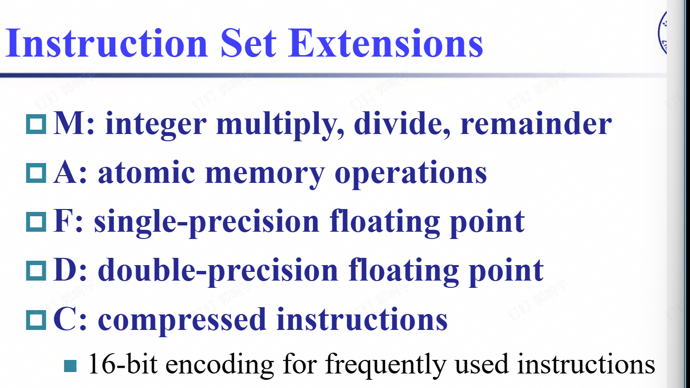
一些易错¶
在ppt最后
这里说一下递归函数应该怎么写¶
有几个原则：
- 每次调用要准备2个位置 也就是sp=sp-16 一个用来放回去的位置x1 一个放回去的值
- 在最后的时候写jalr x0 0(x1) 也就是回去
- 你在同一层执行的东西 不用管下面几层这个变量怎么变 就看这一层就好了。你要记住 写的对的话肯定会还原的。
- 一般递归的命令就是 jal x1 函数（比如fib fact）
附录¶
在RISC-V指令集中，不同类型指令的opcode（操作码，低7位） 如下：
| 指令类型 | opcode（二进制） | opcode（十进制） | 说明 |
|---|---|---|---|
| R型（寄存器-寄存器操作） | 0110011 |
51 | 用于算术逻辑运算（如ADD、SUB、AND等），需结合funct3、funct7进一步区分指令 |
| I型（立即数/加载操作） | - 0000011（加载指令，如LB、LW）- 0010011（立即数运算，如ADDI、XORI）- 1100111（跳转并链接寄存器，如JALR） |
- 3 - 19 - 103 |
涵盖短立即数运算、内存加载、寄存器跳转操作 |
| S型（存储操作） | 0100011 |
35 | 用于内存存储（如SB、SW） |
| B型（条件跳转） | 1100011 |
99 | 用于条件分支（如BEQ、BGE） |
| U型（长立即数） | - 0010111（AUIPC）- 0110111（LUI） |
- 23 - 55 |
用于长立即数加载（如LUI将立即数左移12位） |
| J型（无条件跳转） | 1101111 |
127 | 用于无条件跳转（如JAL） |
这些opcode是指令解码的关键标识，通过低7位即可快速区分指令的大类别，再结合funct3、funct7等字段可进一步确定具体指令功能。
补充补码¶
补充补码一个小知识：其实负数的补码就是他的正数全部取反+1；